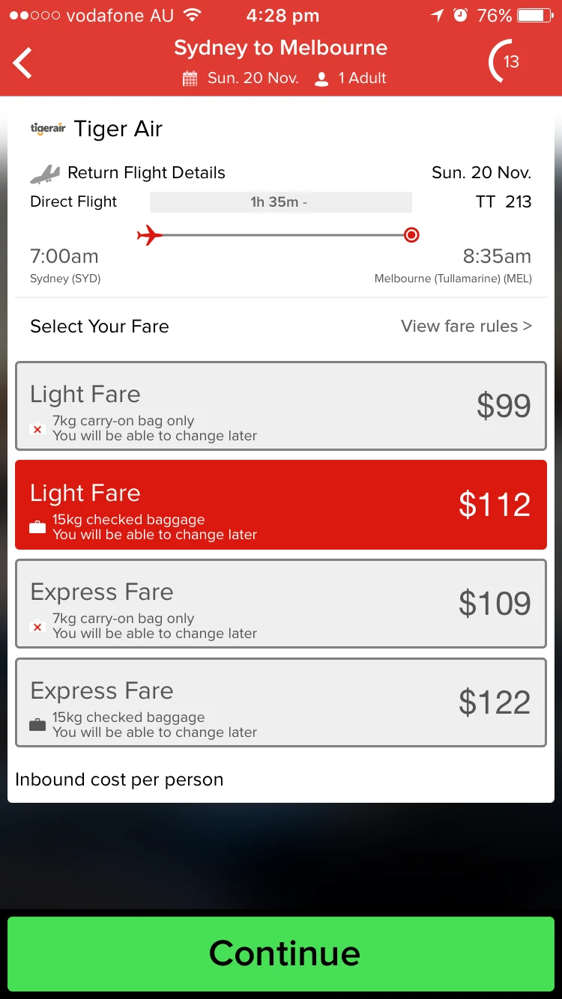
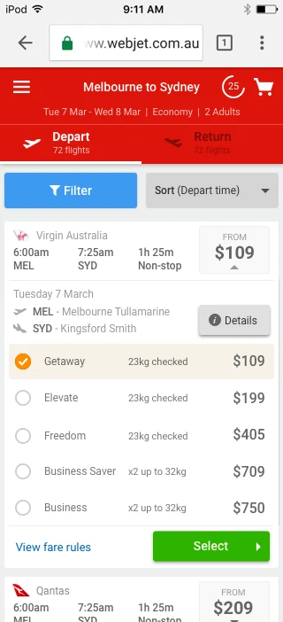
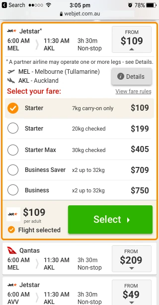
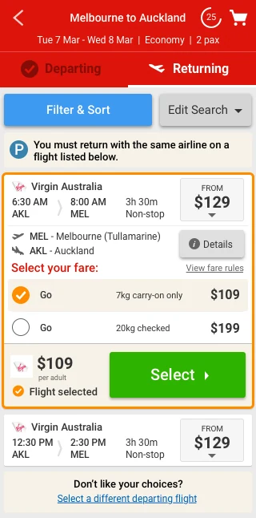
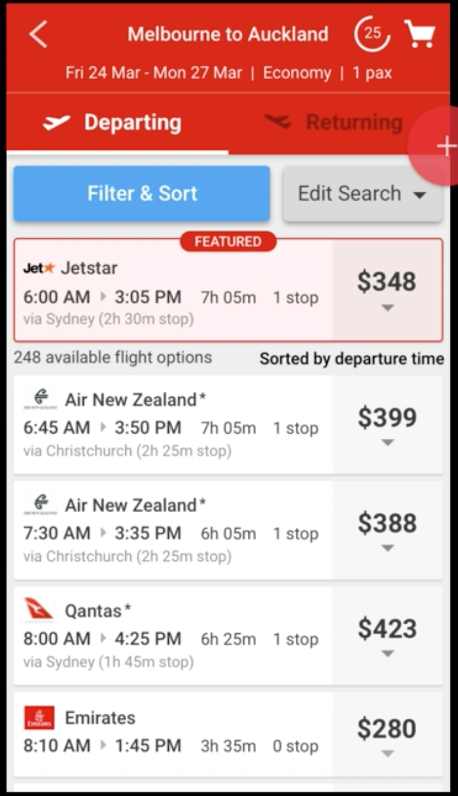
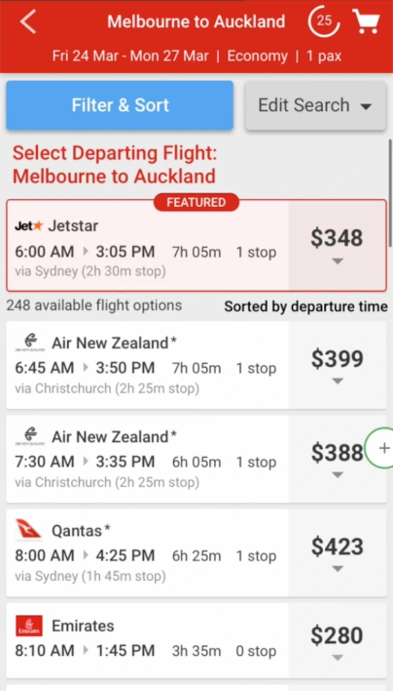

Case study 02 · Webjet (ASX:WEB)
De-risking design through customer involvement
Webjet’s mobile flight purchase path needed a rebuild, and opinions were abundant. I led the risk-averse product team through internal and external rounds of research & refinement, and the evidence decided what shipped.
The short version
A case study of the process behind de-risking a critical purchase path design overhaul.
Four sets of input, resolved in this order
- The agency, engaged before I joined.
- Product & Marketing, with existing commercial arrangements.
- The UI dev team, with buildability feedback.
- Customers – six rounds of remote usability studies.
Why this approach was necessary
Webjet was risk-averse. Changes to any purchase path were highly scrutinised by internal stakeholders due to the potential impact on revenue. The in-house UX practice was still new there. So alongside the design work I was making an argument: that testing before building it is how you de-risk a project, and that customer research evidence trumps internal stakeholder's gut-feel opinions.
How this is laid out:
Part one is the internal
work – inheriting and adapting, with stakeholders reconciled prior to moving forward.
Part two is the six rounds of usability testing that decided what shipped – including adding a fake loading screen 👀 when the flight data was already loaded.
Part one
Shaping it internally
Everything in this half happened before a single customer saw anything. Inheriting an agency’s work, reconciling it with what the API could actually return, consulting Product, Marketing and engineering, and defining every flow variant – so that when testing began we’d be extracting insights only customers could answer.
What I inherited: two products that had drifted apart
Webjet reached smartphone customers through a mobile web site and an iOS app that had been built at different times by different teams (one internal, one external).
Mobile web presented results as a dense sortable table then sent you off to a separate screen to choose a fare type.


The iOS app used a different visual language entirely (displaying a timeline concept and banner), and retained the selected flight's details within the fare selection screen.


The agency wireframes, and the constraint they missed
An external agency had produced wireframes before I was involved. Much of the interface they proposed could not be accomplished within the constraints of single API call content retrieval — the data simply wasn’t there to populate those screens.
The fare comparison also leaned on iconography to express the differences between fares. This required manually codifying every possible fare available (on an on-going basis) and bearing the risk of disparity upon change by the airlines, which carried more development work than the MVP allowed.
One idea was worth keeping. The flight card expanding in place, so choosing a fare happened on the results page. Our existing mobile site & iOS app handed customers off to a separate screen to pick a fare — keeping them in the flight list reduced friction in the case of a change-of-mind.

Two wireframe passes before anyone saw it
Pass one moved the complex fare comparison out of the fares list due to significant technical scope - this was flagged as a future product backlog item and dealt with in a subsequent year.
Then I critiqued my own pass. Expansion to see fares was good practice and stayed. But giving each cabin class its own top-level card was neither necessary nor clear — it meant one flight appearing repeatedly down the list, which is exactly the kind of thing that makes a customer doubt they’re reading the list correctly.


Pass two halved the number of top-level cards by moving every cabin class into the expanded card. It also revealed the arrival/departure airport code, and introduced our approach to displaying 'paired flights': displaying them as their own cards at the top level rather than introducing complexity downstream.
General flow approved. Now it was worth building a prototype.
From wireframe to clickable prototype
High-fidelity mocks next, then clickable prototypes in InVision for remote usability testing. Two things went in at this stage that hadn’t been in the wireframes:
- Non-primary airports highlighted orange. Melbourne (Avalon) is not Melbourne (Tullamarine), and a customer who discovers that at the airport is not happy.
- Marketing and Product requirements — a ’featured airline’ slot was added, and the ’compare fares’ button came out for MVP.


Then a round of Webjet-side changes before testing:
- Filter and Sort combined into one control. Previous testing on our hotels purchase path revealed that customers used the two words interchangeably.
- A change-of-mind pathway — ‘Edit Search’ given a permanent home rather than being a back-button exercise.
- ‘Selected Orange’ UI pattern library colour used for the expanded card border and selected fare.
- Visual hierarchy refined so the card’s text elements sat in the correct order of importance. ‘Via’ city names plus stop times added.
- Seven card types identified and designed: featured, sale, non-stop, with stops, non-standard airport, next-day arrival, and operated by another carrier.
- A larger call to action.


Design system, doing its job
Buttons, modals, and the selected-card colour all came from the UI Pattern Library I’d founded the year before. This accelerated design/prototyping decision making and significantly reduced downstream build time.
The paired flight flow, borrowed rather than reinvented
Some fares only allow a return on a specific set of flights with the same airline. On desktop this had been a purchase-path dead-end until we fixed it, and the studies that fixed it had already established what customers could understand.
So I designed the mobile paired flight flow on those learnings rather than starting fresh, and adopted the ‘paired flight’ nomenclature from the earlier studies for consistency. Every key variant flow was explicitly designed rather than left for the downstream build team to interpret.



Earn your pixels
Travel products are information-dense and a phone gives you one column, so the last pass before testing was about what each element was actually worth.
- Repetition reduced. Departure and arrival airports hidden unless the airport was non-primary — the customer told us the route, so restating it on every card is noise. The exception is exactly the case where it matters.
- Next-day arrivals called out explicitly, in orange. Arriving on a different date than you assumed is a refund request waiting to happen.
- Card height reduced, so more product sits above the fold.
I also showed the near-final card to the UI dev team and took their feedback: a full-height price box, duration and stops onto a single line, airport codes dropped to save space, and more padding top and bottom. Every one of those made the card easier to scan as well as easier to build — which is what you would hope for from feedback given by the people who have to build it.
That was the last input available to me inside the building. The agency’s concepts had been reconciled with the data contract, Product and Marketing had what they needed, engineering had signed off on buildability, and the pattern library had settled everything it could. Which left exactly one risk on a revenue-critical purchase path — and it was the one nobody at Webjet could settle by having an opinion about it.

Part two
Handing the decision to customers
Six rounds of remote usability studies through UserTesting.com. Each round surfacing new insights and validating or invalidating my solutions.
Decision: Testing for pain, not just happy paths
I crafted three scenarios to test: a simple one-way booking, engaging with a paired flight the customer did not want, and a discovering a paired flight the customer did want. Designing the happy path is the easy part; but revenue is lost when friction is encountered. If the recovery path isn’t tested, it isn’t designed!
Round by round
The loop each time: run the studies, write up what I saw, change the design, run it again. What follows is every round as it happened — including a surprising expectation around a missing loading screen.
The observations, and the assumption I logged
What happened
- The header wasn’t sticky — the filter button scrolled out of sight exactly when people wanted it
- Most participants wanted to filter and sort, but not all of them clicked the blue ‘Filter & Sort’ button. People clicked Edit Search first
- Wayfinding needed work: the departing-to-returning transition was abrupt, the next step was unclear initially, and it wasn’t clear which direction of flight you were selecting
- ‘Select ›’ didn’t read as the path forward to see paired returning flights
- Paired flights should be visible as soon as the first paired card is expanded — or instructions added to say how to reach them
- FEATURED was throwing people off as to what the sort order was
- A couple of participants avoided even expanding paired flight options, reading them as less choice
- One participant suggested reversing the header on the returning leg to ‘Auckland to Melbourne’
What I changed
- Made the header, including the filter button, sticky
- For paired flights, I moved the returning flight options out of the next screen and into the departing flight card, so people didn’t have to leave the departing flight screen — a call that ultimately proved more confusing
- Began experimenting on the FEATURED flight: a dividing line, then a red background tint, then — eventually — a rename, which landed well
The assumption I logged
- The transition between departing and returning was a quick fade, and the tabs alone weren’t telling people what to do next. I assumed making the header sticky would go some way to resolving this. Writing that down is what made round two informative rather than merely disappointing.

The assumption fails, and so does my fix
What I changed
- Sticky header
- Background tint on the featured card, with the sort-order line moved below it to divide it from the list
- Single-card paired flight — departing and returning legs combined into one expanded card
- ‘Departing Flight’ / ‘Returning Flight’ headings on expanded cards
- Removed the count of paired returning flights, to see whether hiding a small number encouraged engagement
What happened
- FEATURED and sort-order confusion: unchanged
- Which-leg-am-I-on confusion: unchanged, despite the sticky header. My assumption from round one was wrong
- The single-card paired flight flow was very poor. Confusion all around, information overload, no clarity on what to do if the return flight wasn’t wanted — participants were trying to un-tick items to escape
- Hiding the count changed the rate of engagement not at all, so the number of return options went back in


Explaining harder didn’t work either
What I changed
- Removed the depart/return tabs entirely
- Added an imperative at the top of the results telling people what to do
- Added explanation and instructions to the expanded paired flight card
What happened
- FEATURED and sort order: still confusing
- Which leg am I on: still confusing, imperative or not
- Paired flight flow improved…
- …but still very poorly understood. Not an acceptable solution
The call
- Revisit the original paired flight flow rather than keep patching the combined card, and address the rest with header changes, screen transitions, and clarifying the next step on the paired flight card


Reverting, renaming, and both problems gone
What I changed
- Rebuilt the header: sortable column titles, the imperative, and the date
- FEATURED renamed PROMOTION
- Paired flight reverted to the original flow; ‘Select’ relabelled ‘Continue’
- Switched the positions of Filter and Edit Search
- Loading screens added between the departing and returning steps — even though the content was already loaded, because participants expected a transition
What happened
- FEATURED and sort-order confusion: eliminated
- Which-leg confusion: eliminated, by keeping a single imperative visible at all times in the header — focusing people on the task in front of them instead of asking them to hold a two-step model
- Paired flight experience greatly improved


Carrying the decision forward
What I changed
- Edit Search and Filters moved to a floating footer that shows and hides itself automatically as cards expand
- The selected departing flight now displayed on the returning results screen
What happened
- Confusion about which flight had been selected in the previous step: eliminated
- Paired flight clarity improved


Last-mile language
What I changed
- Paired flight icon added to the selected flight strip
- ‘Don’t like your choices?’ became ‘Want more flight options?’, with a clear back arrow and call to action
- ‘Paired flight:’ prefix added to the explanation text
What happened
- Paired flight clarity improved again

The observation I deliberately did not act on
In round one, a couple of participants avoided expanding paired flight options because they read them as offering less choice. That is an interesting signal and it would have been easy to redesign around it. But it was a couple of people. Not enough participants to warrant a change, so I logged it for future testing and left it alone. Being led by evidence has to include not over-reading it — otherwise every round spends its budget chasing the last participant who said something memorable.
The design that went to build
Sortable column headers with a single imperative ('Departing Flight' / 'Returning Flight') and the date pinned above them. PROMOTION instead of FEATURED. Paired flights on the original two-step flow with clearer labelling and a positively framed way out. Filters and Edit Search in a floating footer that gets out of the way. The selected departing flight carried forward so nobody has to hold it in their head.
Seven card types and every key paired-flight variant flow specified, with pattern-library components already in place for the front-end team. It went to build and shipped.
Outcome
Confusion points that had survived multiple rounds of iteration were eliminated, and the paired flight experience went from confusion all around to clarity improving in each of the last three rounds. The design reached the development team already carrying its evidence of success. Every one of the six rounds cost a fraction of what it costs to discover the same problem in production, on purchase-path screens where confusion directly correlates to loss of revenue.
What I learned
Five things I took from this
- Having the right foundations is critical to success. Prior to this project I had established a UI Pattern Library, secured a remote usability study budget, established a front-end development specialist team, and built trust with internal stakeholders.
- Outsource decision making to customers. Before making usability studies a key practice at Webjet there was no way to know for sure that what made sense to an industry-savvy internal stakeholder made sense to customers.
- Park your ego. Maturing as a product designer involves being open to and actively inviting feedback and criticism.
- Document your assumptions and observations. This is critical to bring the team with you on the journey and back your decisions.
- Changing a word can trump visual changes. For the FEATURED flight we tried multiple visual variations. Round four renamed it PROMOTION and the confusion was gone.
- Interaction design matters. Returning flight content was already loaded, but customers expected an interstitial transition after selecting a departing flight. Adding a loading screen with nothing to load is a counterintuitive fix but it worked!
The through-line, and the reason I took this approach: on a purchase path, my taste doesn’t get the deciding vote. Some of the changes I was most confident about moved nothing, problems I believed were solved in round two weren’t solved until round four, and the paired flight flow I explored increased confusion. Every one of those was cheap to find in a prototype. Finding the same things later in production means reputational damage and losing customers.